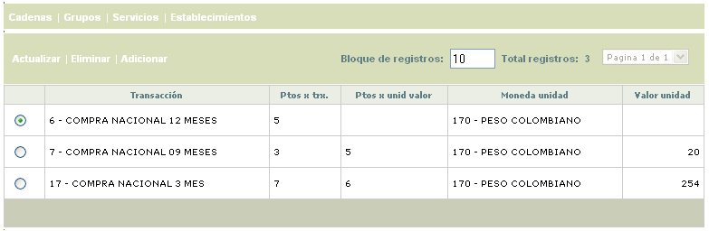
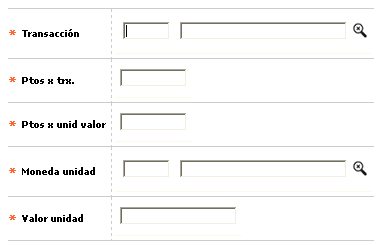
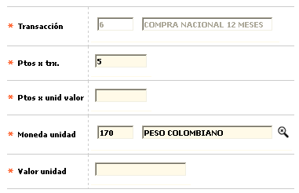
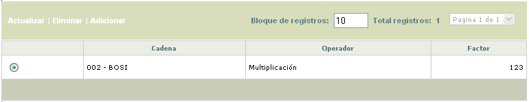
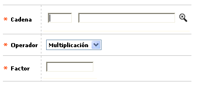
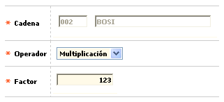

Esquemas de puntajes - Relaciones |
Relaciones: Cuarto nivel de la parametrización en el que se define la manera como las cadenas, grupos, establecimientos, clases de servicios y transacciones, convertirán en puntos los consumos realizados; las diferentes opciones contenidas en este formulario se activarán siempre y cuando en la Parámetros adicionales, no hayan sido marcados como No considerar.
Se regresa al formulario principal de Esquemas de puntajes a través del botón en la parte superior izquierda.
Transacciones: Son en esencia la base a partir de la cual el sistema evalúa el restante conjunto de parámetros señalados que se van a considerar para acumular puntos. En lo referente a transacción, la entidad puede otorgar puntos por transacción aplicada y/o otorgarle puntos por unidad valor de la misma, los que se adicionarían a los anteriores y continuarían evaluándose e incrementándose de acuerdo con los restantes parámetros.

Adicionar: Si el usuario invoca la opción Adicionar se despliega un formulario con los siguientes campos:

Transacción |
Este campo posee lista de valores poblada a través de la opción Transacciones por empresa del módulo de Mercadeo, de la que se seleccionan las diferentes transacciones que la entidad desea compensar otorgándole puntos al cliente por efectuarlas. Es importante tener en cuenta que las transacciones internas seleccionadas también deben encontrarse parametrizadas en el Traductor de transacciones del módulo de Intercambio. |
| Puntos por transacción | Campo en el cual se define la cantidad de puntos que se acumularán en el momento que sean aplicadas cada una de las transacciones que hagan parte del esquema y sean realizadas por el cliente. |
| Puntos por unidad de valor | En este campo se registra el factor a utilizar por el sistema para calcular los puntos a otorgar al cliente por transacción de acuerdo con su valor; su funcionamiento es sencillo y consiste simplemente en que el sistema divide el monto de la transacción realizada y aplicada al cliente, entre el valor señalado en el campo Valor unidad, y este resultado lo multiplica por el factor indicado en este campo, obteniéndose así la cantidad de puntos. |
Moneda unidad |
Campo con lista de valores de la cual se selecciona la Moneda que el sistema utilizará como referente para efectuar el cálculo explicado en el campo anterior. |
| Valor unidad | En este campo se define el valor que se tomará como divisor del monto de la transacción realizada, para obtener los puntos por unidad, si la moneda de almacenamiento de la transacción es la misma Moneda unidad señalada en el campo anterior; en caso contrario, el sistema obtiene la equivalencia y ese resultado será dividido entre el valor indicado en este campo, como ya se explicó. |
Actualizar: Si el usuario invoca la opción Actualizar se despliega un nuevo formulario en cual los únicos campos modificables son los siguientes:

Cadenas: Conjunto de campos en los cuales se definen las características, tanto de valor absoluto como de operador matemático que utiliza el sistema para calcular los puntos a otorgar al cliente por realizar el consumo en los establecimientos que hacen parte de alguna de las cadenas parametrizadas en la opción Cadenas, y que pueden consultarse o asociarse a los comercios mediante la opción Información de establecimientos; siempre y cuando en la opción Parámetros adicionales se haya marcado con Incluir, la opción Cadenas; no aplica en caso de haberse seleccionado Excluir.
El formulario contiene las opciones Actualizar, Eliminar y Adicionar.

Adicionar: Si el usuario invoca la opción Adicionar se despliega un formulario con los siguientes campos:

Cadena |
Campo que posee lista de valores de la que debe seleccionarse el código de la Cadena a la cual pertenece el comercio, desplegando a continuación el nombre de la misma. |
| Operador | Este campo posee lista adjunta de la que debe seleccionarse entre Multiplicación o Adición la forma en que serán calculados los puntos adicionales a otorgar al cliente; en el primer caso, multiplicación, significa que cuando el cliente haga un consumo en cada uno de esos comercios, el sistema tomará los puntos que vienen de la transacción, los multiplicará por el valor definido en el campo Factor, y el valor resultante se sumará a los puntos acumulados que posea el cliente. Cuando se indica Adición significa simplemente que el valor definido en el campo Factor se sumará al total de puntos que el cliente tenga acumulados en el momento. Este mismo procedimiento aplica para los subtabs Clases de servicios, Grupos de establecimientos y/o Cadenas de establecimientos cuando se encuentran activos y en ellos se ha registrado la información correspondiente. |
| Factor | Campo en el que se determina el valor a aplicar por el sistema para calcular los puntos a conceder al cliente. |
Actualizar: Si el usuario invoca la opción Actualizar se despliega un nuevo formulario en cual los únicos campos modificables son los siguientes:
